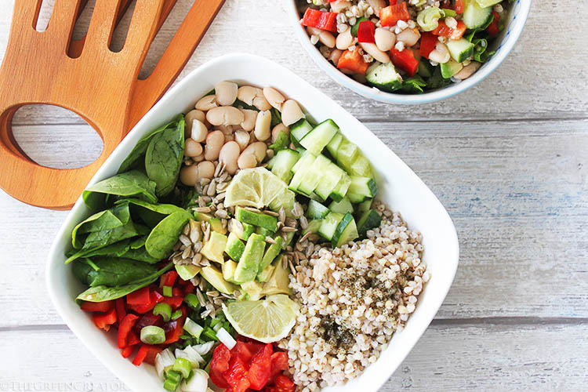
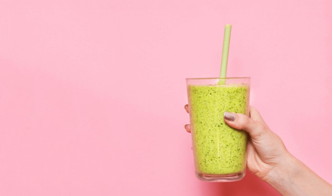

Fall Grocery Guide
In preparation for the Fall season ahead, we’re gonna talk about groceries. I’m covering my favorite in-season produce items, pantry stuff, and everyday staples.

Benefits of a Vegan Lifestyle
Every year more and more people are making the decision to go vegan, and for good reason! There are so many amazing ways that veganism can improve our lives – fantastic health benefits, less stress on our environment, more efficient ways to use our resources, and many more!

Top Vegan Holiday Products from Trader Joe's
Dairy-free nog, turkey-less roasts, and easily-veganized baking mixes make this holiday season oh-so-simple for vegans.

HEALTHY PLANT-BASED LUNCHES ON THE GO
I've got 4 easy, make-ahead lunches that are both satisfying and healthy and 10 super easy snacks! Make sure to scroll down to the bottom of the post for more packed lunch links and inspiration!

Top 10 Vegan Cities to Visit
Here is my ranking of the most vegan-friendly cities in the United States—rich with vegan food, fashion, and culture!
8 Tips for Losing Weight on a Vegan Diet
Up your protein, lower your soy, and as always: go for the greens!!
